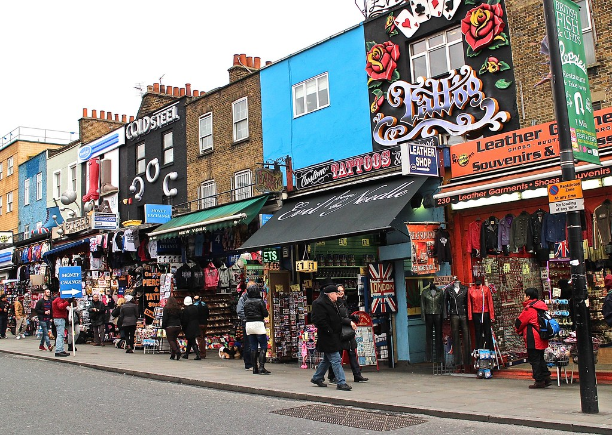
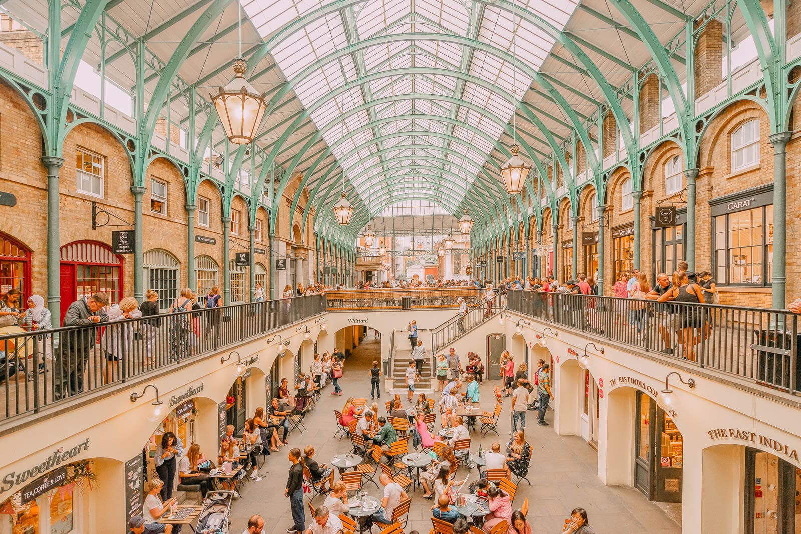

Iconic Food & Culture Markets

Camden Town Market
Nestled along the scenic canals, Camden Market is the beating heart of alternative London culture. Beyond its gothic fashion and vintage stalls, it is an absolute paradise for global street food lovers. Here you can savor everything from authentic gourmet burgers and fiery South American empanadas to Taiwanese bao buns, churros, and mouth-watering vegan delicacies cooked right in front of you.
Portobello Road Market
Famous worldwide for its charming pastel-colored Victorian townhouses and bustling antiques heritage, Portobello Road offers a sensory feast. Alongside rare vintage treasures and fresh flower stalls, the market treats visitors to delicious traditional British bakes, artisan cheeses, freshly squeezed juices, and international street eats that make strolling down this iconic Notting Hill road unforgettable.

Covent Garden Market
Located in the lively historic piazza, Covent Garden combines stunning 19th-century architecture with world-class dining. Under its magnificent glass roofs, you will find high-end artisanal food stalls, luxury chocolate shops, and gourmet pastry stands. Surrounded by street performers and elite restaurants, it is the ultimate destination for enjoying gourmet food in an atmosphere steeped in theatrical history.